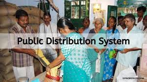

The Public Distribution System (PDS) is a network that ensures the availability of essential goods to customers in all parts of the country. This is a transaction mechanism in which food grain, sugar, and other necessities such as kerosene oil and edible oil are made available to the citizens of the state at a reasonable price in order to meet their basic needs. Regular and timely supply is ensured through a tight monitoring scheme, making the Public Distribution System an effective instrument against various powers in the open market and keeping inflator tendencies in check. The following are the major commodities:

The purpose of the Public Distribution System is not limited to the distribution of rationed products. The primary goal of the public distribution system is to make adequate quantities of essential goods available at all times, in locations accessible to all, at rates affordable to all, and to protect the poorer sections of the population from the malicious spiral of rising prices. Major goals of public distribution system are as under: Make products available to customers, especially the disadvantaged/vulnerable sections of society, at reasonable prices Correct the current supply and demand imbalances for consumer products. Check and prevent hoarding and black marketing in essential commodities Ensure social justice in the distribution of basic necessities of life Even out fluctuations in the costs and availability of mass-consumption products Support poverty-relief programmes, especially rural jobs programmes (SGRY/SGSY/IRDP/Mid-day meals, ICDS, DWCRA, SHGs, and Food for Work), as well as educational feeding programmes